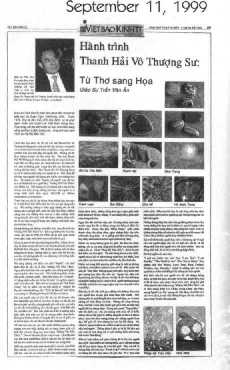
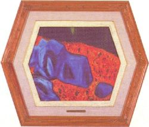

| 
|
Viet Economic Daily News, États-Unis, 11 septembre 1999
|
Il y a environ deux ans, je pris connaissance de la poésie de Maître Suprême Ching Hai (collection «Traces d'une vie antérieure») avec une curiosité toute prosaïque : je désirais savoir si les poèmes d'amour d'une femme qui mène une vie de renoncement seraient différents ou sembleraient excentriques lorsqu'on les comparerait aux écrits d'autres femmes. Et je fus agréablement surpris. Je découvris que, comme le travail d'autres poètes, les poèmes d'amour de Maître Suprême Ching Hai sont remplis des émotions que la vie nous apporte, comme la joie, la colère, l'amour, la jalousie, la passion ainsi que la félicité de la flamme ardente et fougueuse de l'amour de la jeunesse. De plus, sa poésie s'élève bien au-dessus des notions préconçues de la société. Cette rupture d'avec les croyances conventionnelles est caractéristique d'une personne à la recherche d'un vrai chemin spirituel. En fait, c'est surtout cette dernière qualité, toute humaine, qui donne au lecteur autant de plaisir que de joie dans «Traces d'une vie antérieure» de Maître. Cependant, je ne réussis pas à trouver ces mêmes qualités dans les tableaux de la renonciatrice, exposés le 18 décembre 1998 au Shrine Auditorium de Los Angeles.
Avant de visiter l'exposition, je pensais que les tableaux ne seraient simplement qu'un moyen pour aider la poétesse à exprimer Sa poésie en formes et en couleurs. J'imaginais que je me retrouverais face à des coups de pinceau inégaux, épais, en biais ; les couleurs s'entrechoquant, se heurtant les unes aux autres ; des éclaboussures de noirs reflets de nuits romantiques empreintes de tristesse, des éclats de peine et de chagrin ; croissants de lune symboles de romances brisées ; coups de pinceau en rouge foncé symbolisant la convoitise explosant parmi les flocons de nuages rayonnant l'éclat doré et étincelant du Tao.
Mais non ! Je ne pouvais pas détecter la moindre ressemblance avec «Traces d'une vie antérieure». Sans aucun doute, ces peintures (produites de 1990 à 1994) représentent un nouveau voyage de leur Créatrice, voyage artistique tout à fait nouveau et frais. Chaque chose reflète la plus complète harmonie, la tranquillité et la paix avec le décor emprunté pour décrire l'état mental parfaitement calme d'une personne dans un état de nirvana. Chaque chose est peinte en couleurs lumineuses et enchanteresses. Les ombres variées des vigoureuses feuilles vertes, ici et là, se mélangent aux teintes de rouge vibrant ainsi qu'aux humbles nuances de couleur de terre brune.
En outre, je ne percevais plus «l'humanité», les émotions humaines fondamentales telles que le bonheur, la colère, l'amour et la jalousie qui formaient une part essentielle de «Traces d'une vie antérieure». Même les formes des êtres humains, des êtres sensibles complexes semblent être absentes des différents canevas. Je ne vis que deux tableaux contenant des formes humaines. Le premier, «Le clown» en craies de couleur, représente le double aspect du visage du sujet reflétant «tristesse intérieure, bonheur extérieur». Le deuxième tableau «Nettoyer l'étang» dépeint trois personnages et leurs caractères : «Frère Kuo» le daltonien, «Frère Chen» celui qui se tient de travers et «Frère Yang» le petit. Si les véritables personnalités des sujets sont conservées par le travail du pinceau de l'Artiste, chacune de ces figures humaines, du clown aux frères, sert d'intermédiaire pour faire le portrait du monde astral avec son humour, sa drôlerie et son irrationalité. En bref, l'humour et la contradiction de l'existence et de la non-existence simultanée d'un être humain dans le monde ordinaire, tout ceci en lien avec la vacuité de la vie. Le clown rit et pleure en même temps. Le côté droit de son corps est peint de couleurs vives tandis que le côté gauche est tout en teintes tristes et grises. En même temps, les trois frères, à l'évidence, se sentent naturellement heureux et plein d'humour quant à leurs propres défauts.
En ce qui concerne l'état intérieur de la Créatrice, l'observateur ne détecte plus le moindre soupçon de conflit entre «vie humaine» et «vie spirituelle», comme cela se remarquait dans «Traces d'une vie antérieure». Bien au contraire, l'état intérieur de la Créatrice semble être en totale paix et sérénité. Avec ces tableaux, l'Artiste renonciatrice semble avoir redécouvert une liberté ainsi qu'une spontanéité tout enfantine, une innocence pure, libérée et angélique.
Chaque tableau est une glorification d'une espèce de félicité, d'un état de nirvana dans l'ici et maintenant. Chaque aspect naturel de la nature, chaque coup de pinceau florissant est semblable aux pas fiers et dansants d'un oiseau, dont le chant doux et mélodieux s'élève à la pointe de l'aurore ou semblable aux étoiles miroitantes et chatoyantes autour d'une lune fraîche et lumineuse. Même lorsqu'il grêle et qu'il tonne sur Terre, les coups de pinceau dansent en vibrant comme s'ils étaient prêts à se fondre en éclatant dans l'héroïque et courageux «Chant de la mer».
Dans «Nuit de lune», parmi la calme vacuité de la nuit, même les arbres qui poussent sur les collines sont peints comme des enfants qui gambadent et s'amusent. Ils donnent l'impression de vouloir embrasser le rayonnement de la lune couleur or. Cet état de bonheur terrestre s'élargit quelquefois jusqu'à aller au-delà de la simple joie sensorielle de la nature. La scène «Rempli de grâce» révèle une joie qui vient du coeur. À partir d'une simple fleur sur une vigne, l'Artiste en a peint des centaines de plus, créant une abondance de félicité à la fois sur les arbres et les branches.
L'Artiste jouit aussi d'un bonheur issu des réminiscences du passé. Le tableau ayant pour titre «Nostalgie» n'évoque pas la moindre trace de tristesse que pourrait éprouver une personne qui se souvient de sa terre natale ou de la peine d'être loin de chez soi. Bien au contraire, en regardant le travail de «Fruit du dragon» avec sa délicieuse chair blanche et sa peau pourpre brune, fruit couché parmi de verdoyantes et larges feuilles, l'observateur fait simplement l'expérience d'une mémoire du passé douce et chaleureusement intime.
Globalement, les oeuvres de Maître Ching Hai décrivent un monde de tranquillité venant du coeur, en liberté et satisfaite, mais aussi extrêmement enjouée et joyeuse. Néanmoins, j'aperçois aussi plusieurs peintures qui semblent véhiculer des messages sociaux. Par exemple, avec «Le congrès des pierres» au-dessus d'êtres sensibles de couleurs rouges et de couleurs pareilles au sable, symbolisant colère et frustration, s'élèvent d'énormes, impassibles et ennuyeux rochers, leurs tons pourpres représentant le monde des chefs insensibles ; ceux-ci étant les principales causes des guerres et de la corruption humaine. Le message ici est peut-être bien un appel pour une sagesse ouverte et expansive à la fin d'un tunnel sombre de même que dans le tableau «La caverne».
| 
|
Le congrès des pierres
|
Si la sagesse est lente à s'ouvrir, est-ce la faute des «lecteurs», à ces personnes qui lisent beaucoup et cependant ne comprennent pas, toujours en train de débattre et d'argumenter dans le seul et unique but, celui de créer plus de conflits dans le monde. Ceci pourrait bien être le message du tableau «Débat» qui représente deux énormes encyclopédies s'affrontant avec pour titre «N°1» sur leurs couvertures. Le fond du tableau est une couche pourpre, entourant une table bancale, symbole de la société humaine.
Cependant, Maître Ching Hai ne transmit pas Ses messages principaux lorsqu'Elle créa ces tableaux, mais plutôt lorsqu'Elle griffonna sur les pierres dans les montagnes et les jungles de Formose aux alentours de la même période. Ces messages consistent en quelques mots brefs à propos de Jésus, Bouddha, des êtres humains ou de la nature. Quand elle inscrivit ces messages sur les pierres, l'Artiste renonciatrice produisit l'état dépourvu d'ego des êtres humains en les combinant avec l'état dépourvu d'ego des pierres, harmonisant l'espèce humaine avec la nature.
Tous les êtres sont un. Ceci constitue peut-être Son message principal de même que la signification des phrases telles que «Moi et mon Père sommes Un», «Je suis Dieu», «Je suis Bouddha», «Le monde est moi» ou «Le Tao est silence».
Des mots comme «Paix, amour, liberté, pureté, perfection, sagesse, joie et humilité» révèlent vraiment la vision de l'Artiste au sujet d'un monde idéal pour l'humanité toute entière.
Lorsqu'Elle inscrivit des messages sur les pierres dans la jungle de Formose, messages à propos de religion, de moralité et de valeurs sociales, l'Artiste renonciatrice partit en exploration. Ce voyage est un jalon supplémentaire pour faire voler en éclats les croyances préconçues de la société, similaire à «Traces d'une vie antérieure». Cette rupture d'avec les conventions se manifeste en plaçant Jésus en Bouddha, l'humanité en pierres et la tranquillité du bouddhisme dans le rien du taoïsme, ceci sans abandonner la joie de vivre et l'humour de Chuang Tse.
Note de l'éditeur :
Le professeur Tran Van An est aujourd'hui directeur d'un établissement d'éducation à Orange Country en Californie (États-Unis). Avant 1975, il fut membre du congrès de la province de Gia Dinh et servit aussi comme orateur pour la république d'Au Lac.